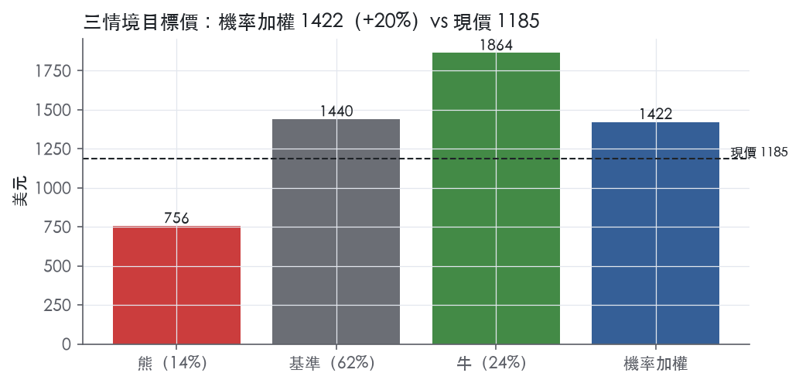
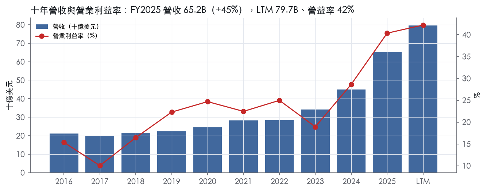
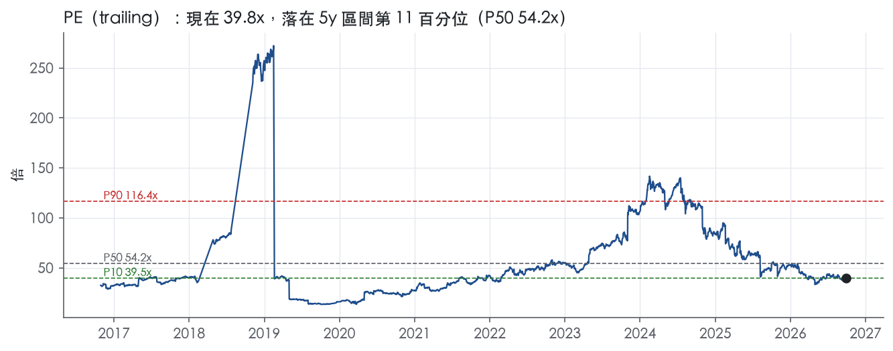
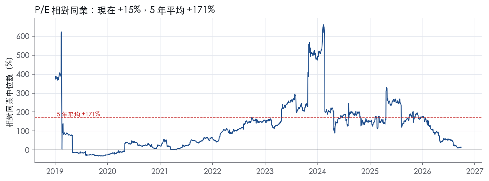
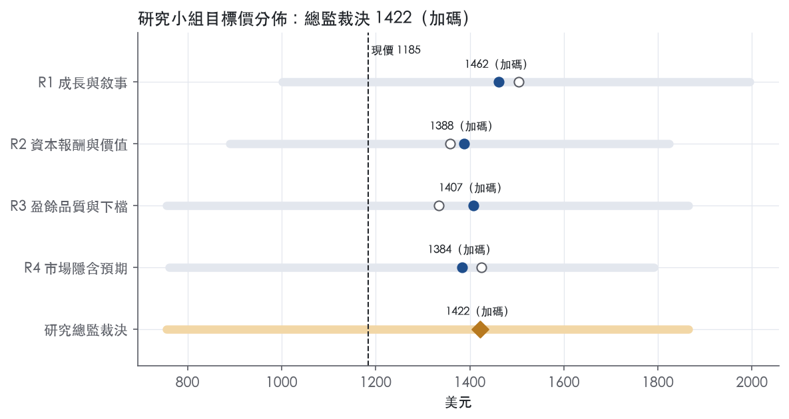
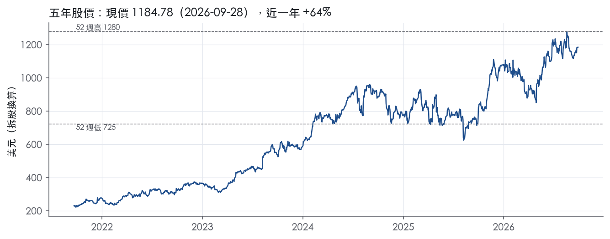

評等總表 › 醫療保健 › LLY
盈餘扛報酬倍數持平，看多｜評等 加碼｜目標價 1422
| 報告日 | 評等 | 目標價 | 當時股價 | 超額報酬 |
|---|---|---|---|---|
| 2026-09-28 | 加碼 | 1,422 | 1,185 | +10.4% |
| 評等 | 加碼 |
| 12 個月目標價 | 1422 美元 |
| 現價 | 1184.78 美元（2026-09-28） |
| 預期報酬 | 股價 +20.0%＋股息 0.6%＝總報酬 +20.6%；同業籃門檻 10.2%，超額 +10.4% |
| 估值方法 | P/E 30.0x，套在第 5–8 季的EPS（也就是一年後的未來四季） |
| 三情境 | 熊 756／基準 1440／牛 1864 |
| 研究流程 | 四位研究員兩輪辯論＋研究總監裁決 |
| 資料來源 | SEC EDGAR XBRL、Tiingo、FRED（全免費） |
盈餘扛報酬倍數持平，看多（研究總監裁決，四位研究員兩輪辯論後）
評等 加碼｜12 個月目標價 1422 美元（總監三情境機率加權 1446 與研究員中位數 1398 各半）｜現價 1184.78（2026-09-28）
預期報酬：股價 +20.0%＋股息 0.6%＝總報酬 +20.6%。同業籃門檻 10.2%，超額 +10.4%。
估值方法：P/E 30.0x，套在第 5–8 季的EPS（也就是一年後的未來四季）。三情境：熊 756（14%）／基準 1440（62%）／牛 1864（24%）。
什麼會讓研究總監改變看法：FY2026Q3 營收年增 <24% 且管理層歸因美國淨價，或定案協議外溢至商業保險／tirzepatide 入選 IRA，轉中性並把倍數降到帶 P25 附近；FY2027 指引年增 ≥20% 且 orforglipron 核准，倍數上調到 35x。
| 過去四季（實際，FY2026Q2） | 未來四季 | 第 5–8 季 | 第 9–12 季 | |
|---|---|---|---|---|
| 營收（B） | 79.7B | 105.2B | 126.2B | 138.8B |
| 營收成長 | 49.6% | 32.0% | 20.0% | 10.0% |
| 營業利益率 | 42.2% | 42.2% | 42.2% | 40.0% |
| EPS（美元） | 29.79 | 39.93 | 48.01 | 50.13 |
| EPS 成長 | 94.7% | 34.0% | 20.2% | 4.4% |
| 每股股息（美元） | — | 0.00 | 0.00 | 0.00 |
| P/E（現價） | 39.8x | 29.7x | 24.7x | 23.6x |
| 股息殖利率（現價） | 0.6% | — | — | — |
過去四季為申報數字；預測為研究總監的假設、程式計算。倍數與殖利率都用現價計算，用來看現價對應各期獲利的高低。
| 情境 | 機率（歷史） | 故事 | 未來四季營收成長 | 第 5–8 季營益率 | 倍數 | 目標價 | 股價漲跌 |
|---|---|---|---|---|---|---|---|
| 熊 | 14%（8%） | 風險表第 2 條定案協議折扣外溢至商業保險、第 4 條調配分流壓淨價、第 1 條 tirzepatide 入選 IRA 使護城河降為窄；淨價讓步直落營業利益並伴隨約 1pp 存貨減損，倍數回到帶 P10–P25 成熟藥廠區間 | 22.0% | 37.0% | 22.0x | 756 | -36.2% |
| 基準 | 62%（66%） | 降價只透過 y1 營收記一次，成長降檔至兩成、營益率停在含反覆費用的 LTM 水準，倍數對市場持平略升 | 32.0% | 42.2% | 30.0x | 1440 | 21.6% |
| 牛 | 24%（26%） | Medicare 新量完全吸收折扣、orforglipron 核准放量、全年無大額費用化，倍數回到前瞻帶 P50 | 36.0% | 44.0% | 35.0x | 1864 | 57.4% |
目標價由程式依研究總監的驅動與倍數計算；機率由研究總監給定。括號內是歷史頻率：把這檔股票過去十年 12 個月報酬的波動形狀，置中在基準情境，結果落在各情境附近的比例。

四位研究員用不同方法各自估值，回應研究總監的質疑後交出第二輪，最後由總監逐點裁決。各研究員的主張見第七章，裁決理由見第八章，完整論證見《研究底稿》。
| 立場（一輪→二輪） | 加權目標價（一輪→二輪） | 評等（一輪→二輪） | 第二輪倍數 | 熊～牛目標價 | |
|---|---|---|---|---|---|
| R1 成長與敘事 | 看多→看多 | 1504→1462 | 買進→加碼 | 37.0x | 1001～1996 |
| R2 資本報酬與價值 | 看多→看多 | 1358→1388 | 加碼→加碼 | 34.0x | 890～1824 |
| R3 盈餘品質與下檔 | 中性→中性 | 1334→1407 | 中立→加碼 | 30.0x | 756～1864 |
| R4 市場隱含預期 | 看多→看多 | 1425→1384 | 加碼→加碼 | 27.0x | 760～1791 |
| 研究總監裁決 | 看多 | 1422 | 加碼 | 30.0x | 756～1864 |
目標價由程式依各自的驅動與倍數計算；評等＝機率加權總報酬 − 同業籃門檻。
Eli Lilly 是一家僅有單一業務分部——人用醫藥品（human pharmaceutical products）——的美國大型製藥公司，1876 年創立於印第安納波利斯¹。公司透過美國（含波多黎各）、歐洲與亞洲的生產基地，將產品銷往約 90 個國家¹。公司自陳的長期目標是「持續發現或收購、開發並商業化創新藥物」，長期成功繫於此能力¹。財務規模上，LTM 營收已達 79.67B，較 FY2023 的 34.12B在三年內成長逾一倍，主要動能來自代謝病用藥 Mounjaro／Zepbound 這條 GLP-1 產品線的放量。客戶結構高度集中於美國三大藥品批發商，反映的是製藥業「工廠—批發—藥局」的通路結構，而非零售終端定價權掌握在 Lilly 手上。
公司對外僅揭露一個可報導分部，因此無法從 10-K 取得各治療領域的營收占比拆分，10-K 未揭露。產品線依治療領域分為四大類：心臟代謝健康（Cardiometabolic Health）、腫瘤（Oncology）、免疫（Immunology）、神經科學（Neuroscience）¹。心臟代謝健康類產品包含 Basaglar、Humalog 系列、Humulin 系列、Jardiance（與 Boehringer Ingelheim 合作）、Mounjaro，以及用於肥胖／體重相關共病治療的 Zepbound¹。腫瘤產品線含 Cyramza、Erbitux、Inluriyo、Jaypirca、Retevmo、Tyvyt（與 Innovent Biologics 合作，限於中國市場）、Verzenio¹。免疫產品線含 Ebglyss（與 Almirall 在歐洲合作）、Olumiant（與 Incyte 合作）、Omvoh、Taltz¹。神經科學產品線含 Emgality 與治療早期症狀性阿茲海默症的 Kisunla¹。從財務走勢看，公司毛利率已由 FY2023 的 79.2%（換算自年度表）拉升至 FY2025 的 83.0%，營益率同期由 18.9% 大幅躍升至 40.4%，顯示產品組合正快速向高毛利、專利保護中的 GLP-1／減重類藥物集中。10-K 也提示風險：公司「對相對少數產品或產品類別貢獻公司總營收比重甚高」構成風險因子之一¹，這與財報數字反映的集中度趨勢一致。
公司在美國以外自行維持銷售組織，部分市場則透過第三方經銷與推廣安排合作¹。美國境內大部分產品透過批發商流向藥局、醫師與醫院，2025、2024、2023 三年，McKesson Corporation、Cencora, Inc.、Cardinal Health, Inc. 三家批發商各自佔公司合併營收「顯著比例」，其餘客戶均未超過 10%¹。公司也建置了直接對病患的數位健康平台 LillyDirect，用於部分司法管轄區內由第三方藥局配送指定藥品，2025 年透過 LillyDirect 的銷售占比持續成長¹。公司帳管人員（account managers）服務的對象涵蓋批發商、藥品福利管理商（PBM）、保險公司、雇主、管理式照護組織、團體採購組織、政府及長照機構、醫院與部分零售藥局，與這些機構的安排通常包含折扣或回饋金（rebate）¹。地區揭露上，10-K Item 1 本身未提供各國別或美國／國際營收占比的具體數字，10-K 未揭露；但公司花大量篇幅說明美國私部門定價動態（formulary 談判、340B 計畫、IRA 藥價協商）與海外市場（歐盟、日本、中國）的政府定價管制，顯示美國仍是最主要且政策風險最集中的市場。
沒有取得對應的 8-K 新聞稿，因此以下僅能引用資料包中的申報季度數字，公司管理層對次季的具體指引語句無法引用。FY2025Q3（截至 2025-09-30）營收 17.60B，年增 53.9%，毛利率 82.9%，營益率 41.8%（等，資料包最近八季表）【判，數字取自資料包】。FY2025Q4（截至 2025-12-31，年度倒推）營收 19.29B，年增 42.6%，毛利率 82.5%，營益率 43.4%，單季淨利 6.64B（資料包最近八季表）【判，數字取自資料包】。FY2026Q1（截至 2026-03-31）營收 19.80B，年增 55.5%，營益率進一步擴大至 45.0%，單季 EPS 8.26（資料包最近八季表）【判，數字取自資料包】。FY2026Q2（截至 2026-06-30）營收 22.97B，年增 47.7%，毛利率跳升至 85.8%，單季 CFO 10.69B、FCF 7.76B 均為近八季高點（資料包最近八季表）【判，數字取自資料包】。整體趨勢是：連續四季營收年增率維持在 40% 以上高速區間，毛利率與營益率同步走高，顯示 Mounjaro／Zepbound 放量所帶來的規模效益仍在兌現中，且尚未看到明顯的成長趨緩訊號。值得留意的是，總債務由 FY2025Q4 的 42.50B 增至 FY2026Q2 的 54.91B，同期現金也由 7.27B 升至 8.95B，資產負債表槓桿有所上升，可能與資本支出擴產或潛在併購資金需求有關，但 10-K／新聞稿均未提供具體用途說明，10-K 未揭露。
公司在 10-K 中明白表示，長期競爭優勢取決於「發現並開發、或收購並進一步開發具創新性、具成本效益、能為病患帶來更好結果並為付費方創造價值的產品」，同時要在高度競爭的全球環境中持續提升營運生產力¹。公司特別點名來自中國等市場的競爭正在加劇，這些市場的公司正加速擴充研發能力，並越來越多地將產品授權給跨國藥廠、建立策略夥伴關係，甚至直接在主要市場競爭¹。公司表示其競爭力取決於能否以全球科學進展的速度創新、透過跨地域的策略夥伴關係與授權安排取得創新，以及有效率地將差異化產品推向市場¹。在定價與市場准入策略上，公司提到正在開發並部署替代性的產品可及策略，包括直接對病患（如 LillyDirect）與直接對雇主的通路¹。公司也揭露 2025 年 11 月與美國政府達成的初步自願協議，包括降低 Medicaid 及部分藥品定價、在已開發國家間採取更平衡的新藥定價方式，並承諾自 2026 年 7 月起讓 Medicare 受益人可取得折扣後的減重藥物¹。研發管線方面，公司提到 insulin efsitora alfa 已在美國、歐盟、日本提交上市審查，orforglipron 已在美、歐、日提交審查並取得 FDA 國家優先審查券，可能加速美國核准時程¹。整體來看，Lilly 目前的成長故事高度集中在 GLP-1／減重與糖尿病用藥這條單一產品家族，其餘治療領域（腫瘤、免疫、神經科學）雖然管線廣泛，但從財報數字看仍是配角。公司毛利率、營益率與現金流在過去兩年同步大幅改善，顯示的不只是銷量成長，也包含產品組合優化帶來的規模經濟，但這也意味著公司對單一分子平台的依賴度在上升，一旦專利懸崖（Mounjaro/Zepbound 美國專利約在 2036 年到期、但相關數據保護在 2027 年即到期）或 IRA 藥價協商擴大到該產品線，獲利结構的下修風險不小。在缺乏 8-K 管理層口徑佐證的情況下，本章對次季展望與具體指引語句無法進一步引用，建議後續補充最新財報電話會議逐字稿以完整評估管理層對成長引擎的信心程度。

Lilly 評為寬護城河，趨勢穩定。
無形資產（專利、資料保護、法規核准、商標）是唯一有證據的來源。
看得到，而且大致支持寬評級，但營益率波動度與寬護城河的典型樣貌有衝突。
支持寬評級的數字：
與寬評級衝突的數字：
FCF 利潤率的另一面：
ROE 不採用：ROE 標準差 45.4%，受槓桿與資本結構扭曲，不作為判斷依據。
最大的侵蝕力量是政府定價，其次是專利期限與營收集中。
目標倍數應相對大型製藥同業給予溢價，但溢價要建立在 24.1% 的十年平均 ROIC上，不能把 40.4% 的營益率高峰線性外推到 2036 年之後。
| 指標 | 最新 | 十年平均 | 標準差 | 最低 | 最高 |
|---|---|---|---|---|---|
| ROIC | 38.2% | 24.1% | 8.7% | 6.6% | 38.2% |
| 毛利率 | 83.0% | 78.0% | 2.8% | 73.1% | 83.0% |
| 營業利益率 | 40.4% | 22.4% | 7.9% | 10.0% | 40.4% |
| FCF 利潤率 | 13.8% | 16.5% | 6.2% | 2.3% | 22.7% |
| ROE | 101.2% | 76.4% | 45.4% | -1.6% | 150.2% |
程式計算。資本成本代理值（10 年債＋5%）：10.2%；ROIC 平均減資本成本：14.0%；ROIC 有資料的 9 年中，高於資本成本 8 年。
LTM 營業現金流／淨利為 1.05x，仍在綠燈區，但近三年平均已降到 0.82x，顯示過去三年的擴張期盈餘品質弱於當期。FCF／淨利 LTM 為 0.68x、近三年平均僅 0.31x，均低於綠燈門檻，代表資本支出正在吃掉相當一部分現金盈餘。FY2023 資本支出／營收一度衝到 10.1%、FY2024 為 11.2%、FY2025 為 12.0%（資料包年度表），對應同期 FCF 從 5.73B（FY2022）掉到 0.79B（FY2023）才緩慢回升到 8.97B（FY2025）（資料包年度表），這是產能建置期的典型現金滯後，不是盈餘造假的訊號。應計比率 LTM 為 -1.1%，優於十年平均 -1.1% 與近三年平均 2.7%，單看應計比率本身並不支持「盈餘灌水」的結論。
本次未取得最新財報新聞稿原文，因此無法從新聞稿抄出非 GAAP 調整項目（SBC、攤銷、重組等）的具體金額。僅能從計分表觀察 SBC／營收 LTM 為 0.8%，遠低於十年平均 1.3% 與近三年平均 1.4%，SBC 本身規模不大，不是拉高調整後盈餘的主要來源。在沒有新聞稿佐證的情況下，本節無法評論公司是否把重組費用、資產減損或收購相關攤銷排除在非 GAAP 盈餘外，這是本報告的資訊缺口，提醒估值研究員不要直接引用未經查核的非 GAAP EPS。
槓桿與付息能力目前都在安全區間，不構成估值倍數的限制因素。淨負債／EBITDA LTM 為 1.29x，優於十年平均 1.88x 與近三年平均 2.39x，代表槓桿正在隨 EBITDA 快速成長而下降，而非上升。利息保障倍數近三年平均 19.7x、十年平均 17.0x，付息能力充裕。稀釋股數年變動為 -0.2%（LTM 與近三年皆同），十年平均 -1.8%，顯示公司持續小幅回購、稀釋風險低。股東回饋（股利＋回購）／淨利 LTM 為 44.8%，低於綠燈門檻 50%，近三年平均反而升到 68.6%，呈現黃燈；但對照淨利同期暴增（FY2023 5.24B → FY2025 20.64B，資料包年度表），分母基期效應會壓低回饋率，判斷此黃燈主要是盈餘快速成長造成的分母效應，而非股東回饋政策收緊。淨負債從 FY2022 的 15.52B 一路墊高到 FY2025 的 35.23B（資料包年度表），且 FY2026Q2 總債務進一步跳升至 54.91B（資料包最近八季表），需留意是否為新一輪產能舉債，但目前槓桿比率仍受 EBITDA 成長稀釋在可控範圍。
程式標出六條紅旗，逐條回應如下：
盈餘品質屬中等，估值應以 GAAP 盈餘為基礎並適度打折，而非直接套用未經查核的非 GAAP 數字，因為本次未取得新聞稿無法驗證調整項目的合理性。FCF／淨利近三年僅 0.31x，顯示如果用 P/E 39.8x（trailing）評價，需同時檢查 FCF 殖利率僅 1.7%（資料包快照）是否支持目前的倍數，若資本支出周期未見頂，現金盈餘轉換能力可能持續落後帳面盈餘。槓桿與利息保障目前不構成倍數壓縮因素，淨負債／EBITDA 1.29x 仍在安全區，因此估值倍數的風險主要來自應收／存貨堆積是否為真實需求支撐，而非資產負債表脆弱性。
| 項目 | LTM | 近三年 | 十年 | 燈號 | 規則 |
|---|---|---|---|---|---|
| 營業現金流／淨利 | 1.05x | 0.82x | -1.74x | 綠 | ≥1.00x 綠、<0.80x 紅 |
| 自由現金流／淨利 | 0.68x | 0.31x | -1.53x | 黃 | ≥0.90x 綠、<0.60x 紅 |
| 應計比率（(淨利−CFO)／平均總資產） | -1.1% | 2.7% | -1.1% | 綠 | ≤0.0% 綠、>5.0% 紅 |
| SBC／營收 | 0.8% | 1.4% | 1.3% | 綠 | ≤3.0% 綠、>8.0% 紅 |
| 淨負債／EBITDA | 1.29x | 2.39x | 1.88x | 綠 | ≤1.50x 綠、>3.00x 紅 |
| 利息保障倍數（營業利益／利息） | — | 19.7x | 17.0x | 綠 | ≥8.00x 綠、<3.00x 紅 |
| 稀釋股數年變動 | -0.2% | -0.2% | -1.8% | 綠 | ≤0.0% 綠、>3.0% 紅 |
| （股利＋回購）／淨利 | 44.8% | 68.6% | -42.3% | 黃 | ≥50.0% 綠、<0.0% 紅 |
| 應收帳款成長 − 營收成長（FY2025） | +16.7pp | — | — | 紅 | ≤5pp 綠、>15pp 紅 |
| 存貨成長 − 營收成長（FY2025） | +36.4pp | — | — | 紅 | ≤5pp 綠、>15pp 紅 |
程式計算；燈號以 LTM（無則近三年平均）判定。
| 風險 | 觸發指標（看什麼數字、在哪裡看） | 對 EPS 的影響方向與粗略幅度 | 未來 12 個月發生機率（高／中／低） | 出處 |
|---|---|---|---|---|
| 1. GLP-1 產品高度集中，Mounjaro/Zepbound 美國數據保護 2027 到期、疊加 IRA 政府定價選品擴大 | 每季財報揭露的糖尿病／減重產品線營收占比；HHS 每年 1 月公布的政府定價選品名單（Trulicity、Verzenio 已於 2026 年 1 月入選，2028 生效） | 方向：負向；幅度：大（Jardiance 被選入後 2026 年生效價格較 2023 年名單價折讓 66%，可類推） | 中 | ²¹ |
| 2. 美國政府定價/Medicaid 自願協議執行細節未定，2026/7/1 起 Medicare 減重藥折扣上路 | 公司與美國政府「definitive agreements」簽署進度公告；Medicare/Medicaid 折扣藥品清單生效日 | 方向：負向；幅度：中～大，取決最終協議範圍 | 高 | 10-K 年報 FY2025 Item 1（業務） |
| 3. 產能與供應鏈集中、對中國供應商依賴，疊加美中關稅/BIOSECURE 法案風險 | 公司資本支出/營收（近三年已由 6.5% 升至 12.0%，資料包年度表）；美中貿易政策公告；新廠量產進度公告 | 方向：負向（成本上升或供給中斷）；幅度：中 | 中 | ²＋量化底稿（is.capex/revenue 年度表） |
| 4. 仿製藥/生物相似藥與大規模合成調配（mass compounding）稀釋定價權 | ANDA/BPCIA 挑戰公告；FDA 對合成調配（compounding）執法動作；主要產品專利到期日（如 Trulicity 美國化合物專利 2027） | 方向：負向；幅度：中 | 中 | ²¹ |
| 5. 340B 計畫訴訟與州法擴張、私部門處方箋管理（PBM）議價壓力持續 | Lilly v. HRSA 訴訟進度（上訴中）；州立法擴張 340B 契約藥局的法院判決 | 方向：負向；幅度：小～中 | 中 | 10-K 年報 FY2025 Item 1（業務） |
風險一：GLP-1 單一產品家族集中度過高，疊加提前生效的政府定價。 公司自己在 10-K 揭露的最大營運風險之一就是「對相對少數產品或產品類別貢獻公司總營收比重甚高」²。財報數字驗證了這一點：公司毛利率由 FY2023 的 79.2% 拉升至 FY2025 的 83.0%、營益率由 18.9% 躍升至 40.4%（is.gross_margin//FY2025，年度表），這個提升幅度主要來自 Mounjaro/Zepbound 放量。但 Mounjaro/Zepbound 美國「data protection」保護僅到 2027 年，遠早於 2036 年的化合物專利到期¹，這代表法規性的獨佔期比市場想像的短。更關鍵的是，IRA 已讓 HHS 在 2026 年 1 月選定 Trulicity、Verzenio 進入 2028 年生效的政府定價名單，公司自己承認「鑑於我們的產品組合，我們預期未來幾年會有更多我們的重要產品被選入，這將加速專利到期前的營收侵蝕」¹。Jardiance 先前入選後被砍價 66%（相較 2023 年名單價）¹，可作為 Mounjaro/Zepbound 一旦入選後的降價幅度參考。
風險二：美國政府自願協議執行細節未定，且已排定 2026/7/1 生效日。 公司於 2025 年 11 月與美國政府達成初步協議，承諾降低 Medicaid 及部分藥品定價、承諾 Medicare 受益人自 2026 年 7 月 1 日起可取得折扣後的減重藥物，並將參與政府主導的直接對病患採購平台¹。10-K 明確寫「我們目前正在協商定案協議以落實這些安排」¹——也就是說截至申報日，具體折扣幅度、涵蓋範圍都還沒定案。這個生效日已經排定在未來 12 個月窗口內，是本清單中機率最高的一條。
風險三：供應鏈與產能集中，對中國供應商依賴疊加關稅風險。 公司資本支出佔營收比重從 FY2022 的 6.5% 一路墊高到 FY2025 的 12.0%（is.capex/revenue，年度表），反映大規模擴產（北卡、威斯康辛、印第安納、維吉尼亞、德州、阿拉巴馬、賓州、愛爾蘭、德國、荷蘭新廠）¹。同時公司明確承認「我們及整個製藥業普遍依賴中國供應商提供部分供應鏈」，2025 年美國已對中國商品加徵新關稅、中國也對部分美國商品反制¹。若地緣政治緊張升溫、BIOSECURE 法案或類似立法通過，可能直接衝擊供應鏈與生產¹。公司雖然拿到三年關稅寬限期（以美國製造投資承諾為條件）¹，但這是有條件的，承諾未達標時保護傘可能失效。
風險四：仿製藥、生物相似藥與非法合成調配侵蝕定價權。 10-K 花了相當篇幅描述「counterfeit, misbranded, adulterated, and mass-compounded incretins」持續在美國及其他市場出現的問題，公司認為若監管不足，可能造成消費者對正牌產品安全性與療效的混淆、銷售流失與淨價侵蝕¹。這與 GLP-1 類藥物的高需求、高價格直接相關——正是因為 Mounjaro/Zepbound 供不應求且價格高，才給了合成調配業者可乘之機。此外多個主力產品的美國化合物專利或數據保護將於 2026–2027 年陸續到期（如 Cyramza 化合物專利 2026、Trulicity 化合物專利與數據保護均為 2027、Ebglyss 化合物專利 2026）¹，仿製藥/生物相似藥挑戰隨時可能發生。
風險五：340B 計畫訴訟與州法擴張持續施壓。 公司與 HRSA 就「現金補貨模式（cash replenishment model）」的訴訟仍在上訴中，2025 年 5 月地院已判政府勝訴（要求政府須事先核准 Lilly 的模式，而政府尚未核准）¹。同時多州持續立法擴張 340B 契約藥局適用範圍，部分法院已認定違憲並暫時禁止執行，部分法院則駁回挑戰¹，法律結果分歧代表這條風險的不確定性會持續到訴訟終局前。
資產負債表槓桿快速上升，用途不明。 總債務由 FY2025Q4 的 42.50B 增至 FY2026Q2 的 54.91B（資料包最近八季表），短短兩季增加超過 12B，但 10-K 及新聞稿均未說明具體用途，是否用於擴產、併購或股東回饋無法確認。若這筆增量是為潛在大型併購（例如取得下一代口服 GLP-1 或其他平台）預先鋪墊融資，一旦交易估值過高或整合不順，將直接侵蝕目前 39.8x 的高本益比（僅落在 5 年分位 11.5%，估值本身對獲利不及格已經很敏感）【判，數字取自資料包】。
估值已隱含近乎完美的執行，任何成長趨緩都會造成倍數與獲利雙殺。 目前 trailing P/E 39.8x、EV/EBITDA 30.9x，均落在過去五年最低 10–12% 分位（band.pe/ev_ebitda 現在分位），代表市場目前給的估值本身就處於歷史相對低檔，但仍遠高於多數藥廠同業，隱含市場預期未來幾年 GLP-1 營收持續高速成長且毛利率維持高檔【判，數字取自資料包】。上述五條風險中任何一條若同時發生（例如政府定價選品擴大＋合成調配侵蝕＋供應鏈成本上升），獲利成長趨緩的機率會顯著提高，屆時 EPS 下修與估值倍數壓縮將同時發生，形成雙重打擊，這是熊市情境需要重點量化的傳導路徑。
現價 1184.78 對應 trailing（過去四季）P/E 39.8x、EV/EBITDA 30.9x、EV/EBITA —、EV/Sales 13.9x、FCF 殖利率 1.7%。主要估值倍數 P/E 現在 39.8x，落在5 年區間第 11 百分位（P10／P50／P90 = 39.5x／54.2x／116.4x）。

把程式的機械基準預測放到現價下，市場付的前瞻倍數是：P/E（未來四季） 28.9x、P/E（第 5–8 季） 23.8x。反推 DCF 顯示市價隱含未來五年營收年成長 25.0%（WACC 9.0%、終值成長 3.0%、FCF 利潤率 24.1%，SBC 不加回）。
| 倍數 | 現在 | 5 年 P10 | 5 年 P50 | 5 年 P90 | 現在分位 | 全期 P50 |
|---|---|---|---|---|---|---|
| P/E | 39.8x | 39.5x | 54.2x | 116.4x | 11.5% | 41.3x |
| EV/EBITDA | 30.9x | 30.6x | 39.7x | 81.3x | 12.1% | 38.1x |
| EV/EBIT | 32.8x | 35.0x | 46.8x | 98.7x | 5.7% | 41.6x |
| EV/Sales | 13.9x | 9.5x | 14.8x | 21.1x | 41.1% | 9.7x |
| P/S | 13.3x | 9.0x | 14.2x | 20.3x | 41.4% | 9.0x |
| P/FCF | 58.2x | 42.6x | 92.2x | 536.7x | 34.5% | 87.0x |
trailing 倍數（股價 ÷ 過去四季）；分位以每個交易日計算。
同業籃：MRK, PFE, ABBV, JNJ, BMY, AMGN（手動名單（playbooks/peers.yaml））。評等門檻 10.2%：同業「倍數不變下持有一年」的隱含報酬中位數（＝ FCF 殖利率 ×(1＋g)＋g，g 為 5 年營收年複合成長並夾在 −2%～8%），每家夾在 0～15%、P/E 低於 5 倍視為資料可疑而排除，中位數再限制在 10 年債到 10 年債＋5% 之間（同業原始中位數 12.0%）。
| 代號 | 市值 | 5 年營收 CAGR | 營益率 | ROIC | P/E | 5 年 P/E 中位數 | EV/EBITDA | P/FCF | 隱含報酬 |
|---|---|---|---|---|---|---|---|---|---|
| LLY | 1,058.8B | 21.6% | 42.2% | 38.2% | 39.8x | 54.2x | 30.9x | 58.2x | 9.9% |
| MRK | 367.3B | 9.4% | 9.6% | 23.5% | 119.7x | 20.3x | — | 22.9x | 12.7% |
| PFE | 163.7B | 8.5% | 21.7% | 10.1% | 37.7x | 15.0x | 10.7x | 14.9x | 15.2% |
| ABBV | 471.6B | 6.0% | — | 15.8% | 75.2x | 49.4x | — | — | 7.4% |
| JNJ | 663.6B | 2.7% | 26.4% | 21.2% | 31.5x | 23.6x | 20.6x | 29.8x | 6.1% |
| BMY | 130.8B | 2.5% | 23.8% | 13.5% | 14.1x | — | 11.0x | 11.4x | 11.5% |
| AMGN | 226.0B | 7.6% | 30.0% | 14.4% | 26.0x | 23.6x | 19.1x | 22.2x | 12.5% |
| 同業中位數 | 6.8% | 23.8% | 15.1% | 34.6x | 23.6x | 15.0x | 22.2x | 10.2% |
全部 trailing，程式以各公司 SEC XBRL 與 Tiingo 行情計算；第一列為本檔。
P/E 相對同業中位數：現在 14.9%，過去 1 年平均 101.7%、3 年 192.9%、5 年 170.8%；EV/EBITDA 相對同業中位數：現在 105.1%，過去 1 年平均 139.3%、3 年 238.4%、5 年 229.1%。

事後實現前瞻倍數帶（P/E，2018-08-17..2025-08-15）：P10／P50／P90 = 17.6x／35.8x／61.1x。它是每個交易日的股價除以之後四季實際實現的指標；一年後，今天的第 5–8 季正是那時的未來四季，所以這條帶是 12 個月目標價的同口徑倍數。因為用的是事後實際而非當時預期，過去成長超乎預期的公司這條帶會偏低。
程式的機械基準（成長率從過去四季年增率三年收斂到 6%、利潤率持平）用 事後實現前瞻 P/E P50 估值得到 1782（50.4%），市場現行前瞻倍數（現價 ÷ 基準 未來四季指標）一年後持平，套在基準 第 5–8 季指標得到 1438。這兩個數字只是參考點，不是本報告的目標價；研究員對這個定價的回應在第七章。
下表是每位研究員第一輪（各自獨立）與第二輪（回應研究總監的質疑後）的結果。目標價全由程式依各自的假設計算。
| 立場（一輪→二輪） | 加權目標價（一輪→二輪） | 評等（一輪→二輪） | 第二輪倍數 | 熊～牛目標價 | |
|---|---|---|---|---|---|
| R1 成長與敘事 | 看多→看多 | 1504→1462 | 買進→加碼 | 37.0x | 1001～1996 |
| R2 資本報酬與價值 | 看多→看多 | 1358→1388 | 加碼→加碼 | 34.0x | 890～1824 |
| R3 盈餘品質與下檔 | 中性→中性 | 1334→1407 | 中立→加碼 | 30.0x | 756～1864 |
| R4 市場隱含預期 | 看多→看多 | 1425→1384 | 加碼→加碼 | 27.0x | 760～1791 |
| 研究總監裁決 | 看多 | 1422 | 加碼 | 30.0x | 756～1864 |
目標價由程式依各自的驅動與倍數計算；評等＝機率加權總報酬 − 同業籃門檻。
分歧度：第一輪 加權目標價 1334～1504（區間＝現價的 14%）· 倍數 27～37x · 立場 看多×3、中性×1；第二輪 加權目標價 1384～1462（區間＝現價的 7%）· 倍數 27～37x · 立場 看多×3、中性×1。

| 研究員 | 第二輪主張 | 堅持的理由 |
|---|---|---|
| R1 成長與敘事 | 看多，未來一年EPS給37x，營收成長32%。 | Medicare開出新付費方，量能壓過降價；最近四季年增都在40%以上。 |
| R2 資本報酬與價值 | 溫和看多，未來一年EPS給34x，從十年中位數41.3x打折。 | 關稅寬限綁住資本支出，新盈餘需要更重的資本，不配更高倍數。 |
| R3 盈餘品質與下檔 | 中性，第二年EPS給30x，第一年營收成長30%。 | 降價只在營收記一次；2027年專利到期與2028年IRA定價是排定的拖累。 |
| R4 市場隱含預期 | 看多，第二年EPS給27x，低於市場持平的28.9x。 | 市場低估2027年後的成長；FY2027指引會在一年內觸發倍數重估。 |
每位研究員的逐條回應與完整論證見《研究底稿》（LLY_研究底稿_2026-09-29.docx）。
| 分歧點 | R1 | R2 | R3 | R4 | 什麼資料會分出勝負 |
|---|---|---|---|---|---|
| ① NTM 營收成長（rev_growth_y1） | 32% | 30% | 30% | 35%（沿用機械） | FY2026Q3 財報（約 2026-11）：首個 Medicare 折扣季的營收年增，以及管理層對新量與淨價的拆分 |
| ② Q5–Q8／Q9–Q12 成長（y2／y3） | 20%／10% | 18%／8% | 17%／9% | 22.5%／10% | 2027-02 FY2027 營收指引中值；orforglipron FDA 核准日 |
| ③ 營益率路徑 y1／y2／y3 | 42／42／41% | 43／41／39% | 42.2／42.2／40% | 42.2／42.2／41.5% | LTM@FY2026Q3 營益率；10-Q 揭露 FY2026Q2 回落的費用科目 |
| ④ 目標倍數與口徑 | 37x eps@ntm | 34x eps@ntm | 30x eps@q5_q8 | 27x eps@q5_q8 | 2027-02 指引後，市場對 FY2027 EPS 付的倍數是否高於現在的 28.9x |
| ⑤ 熊情境深度與機率 | 30x@ntm、26% | 27x@ntm、16% | 22x、13% | 21x、14% | 定案協議是否外溢至商業保險；2027-02 IRA 選品名單；10-Q 新增債務用途 |
① y1：選 R1 的 32%。 R4 沿用機械 35%，但那只是 LTM 年增率線性收斂出來的值，裡面沒有 2026-07-01 起的 Medicare 減重藥折扣與 Medicaid 降價¹；R4 自己的熊情境 y1 25% 與主張一都承認事件存在，基準卻不反映，不自洽。R2／R3 的 30% 把自願協議只當降價，漏掉它同時打開一個過去不存在的付費方——Medicare 受益人的減重藥給付，這是增量的量；折扣壓的是這批新量的單價與 Medicaid 既有量的淨價。R1 的 32% 讓量部分抵銷價，位置在近兩季年增 55.5%／47.7%（／FY2026Q2）與 5 年 CAGR 21.6%（同業表）之間。R2／R3 的缺口：兩人都寫不出受影響的營收比重與折扣級距（R3 自承材料裡沒有），30% 與 32% 之間沒有可查的差異，我取有結構性理由的一邊。
② y2／y3：選 R1 的 20%／10%。 R4 的 22.5% 靠 orforglipron，但 10-K 只說送審並取得優先審查券¹，沒有核准日；他「市場隱含 23.8x≈同業 5 年中位數 23.6x」是倍數的論點，不能挪來撐成長。R3 17%／R2 18% 的拖累是排定事件：Trulicity 化合物專利 2027、Trulicity／Verzenio IRA 定價 2028 生效（Q5–Q8 內兩季）¹。但這兩個產品不是成長引擎，Jardiance 的 66% 是對 2023 年牌價而非淨價；2027 資料保護到期後化合物專利仍到 2036，Q5–Q8 內不會有學名藥。R3 看不到業務概況章與護城河章的專利表與接棒管線，把排定事件權重放太重。20% 等於認定拖累與接棒互相抵銷，與機械收斂相當；y3 10% 高於機械 6% 的理由是 2036 專利期加 orforglipron（R1、R4 同向）。
③ 營益率：選 R3，y1／y2 維持基準 42.2%、y3 40%。 淨價讓步已在 y1 營收記過一次，不能再壓營益率。LTM 42.2% 已含 FY2026Q2 的 39.1%，八季內同樣在毛利率穩定下回落的還有 13.3%、29.0%（／FY2025Q1），這類反覆費用已在 LTM 裡。R2 的 y1 43% 高於 LTM 與任何完整年度（FY2025 40.4%），與他自己的「利潤率高峰」論點衝突；他的 y2 41% 把新廠折舊壓進營益率，但資本支出最重的 FY2023（10.1%）ROIC 仍 15.8%，FY2024–25 資本支出 11.2%／12.0% 下營益率反而從 28.6% 升到 40.4%（年度表），折舊壓不出一個百分點以上。y3 取 R3 的 40%：2028 年 IRA 全年生效、公司自承更多重要產品將被選入¹；y3 不進 12 個月目標價。
④ 倍數：選 R3 的 30x，eps@q5_q8。 劇本主尺是 eps@q5_q8，事後實現前瞻帶（P25 22.9x／P50 35.8x）直接可比。R1／R2 用 trailing 錨，10 年 P50 41.3x 含 FY2017 EPS −0.19與 FY2023 低基期 5.80，R1 自己承認失真；程式結果表顯示 R1 1477／R2 1362／R3 1383 的點估相近，三人差在口徑不在主張。真正的分歧在 R4 的 27x：低於市場持平 28.9x 的理由是成長降檔，但他的看多建立在「2027-02 指引觸發倍數重估」，重估在窗口內，倍數卻設在市場一年後付得比現在少——自相矛盾。R4 把利率只用來解釋不取帶 P50，沒有拿來壓到持平以下，四人都沒有違反利率不重複計算。我取 30x 高於 28.9x 的個股理由：一年後市場看到的是 y3 約 10% 成長、營益率 40%、ROIC 38.2%與 2036 化合物專利；自家 trailing 39.8x 已貼 5 年 P10 39.5x，相對同業溢價從 5 年平均 170.8% 縮到 14.9%（同業表），個股降評大半已發生；同業中兩把尺一致的 JNJ 31.5x／AMGN 26.0x 是 trailing 口徑，30x 前瞻換到一年後 trailing 會高於它們，溢價對應護城河章的寬評級。不到 P50 的理由：成長由近五成降到兩成；FCF 殖利率 1.7%、P/FCF 58.2x（快照），資本密度被關稅寬限綁住（風險表第 3 條）；反推 DCF 市價隱含 5 年 25% 營收成長，我的路徑達不到，不能給帶中位數。
⑤ 熊情境：選 R3 的熊（22x），機率 own。 R1 的熊 30x@ntm，程式檢查表顯示熊相對點估僅 −32%，四人最淺；對一檔十年 trailing P/E 在 18.5x～112.9x 間擺盪（／P90）的股票，熊不能只砍盈餘不砍倍數。R2 的熊 27x 錨在 JNJ／AMGN 現行倍數，但那是類股 trailing 重評後的高點（有 5 年中位數的五家全在中位數之上），熊情境裡假設同業停在高點不合理。R3／R4 的 22x／21x 落在帶 P10 17.6x～P25 22.9x，是 FY2018–19 成長 7.6%／3.8%（年度表）時期的倍數。R3 的機制已改成淨價外溢加存貨減損，對應風險表第 2、4 條；R4 把熊掛在第 3 條供應鏈，與他「斷崖式放緩」的故事連結弱。取 R3，並加掛第 1 條（tirzepatide 入選 IRA 使護城河降為窄，護城河章）作為倍數壓到 P10–P25 的機制。
漂移處理。 R3 向中位數靠攏 80%、R4 62%，但每一項修正都對應我第一輪意見並附證據（R3：Q1 程式歷史對照、Q2 LTM 已含 39.1% 季、Q3 FY2023 ROIC；R4：E2 三季回落、E3 IRA 2028），屬被說服而非漂移，不退回。R2 把熊機率降到 16%，低於他新熊距離的歷史 20%（程式對照），是對 V4 的過度修正而非靠攏；我不採用他的機率，但不列退回。drift_rejections 為空。
與機械基準不同的驅動：
目標倍數 30x，eps／第 5–8 季。錨是事後實現前瞻 P/E 帶：高於市場持平 28.9x、低於 P50 35.8x，理由見裁決④。相對同業：同業 5 年 P/E 中位數 23.6x 是「變成一般藥廠」的價位，也是市場隱含 23.8x 所在；我的溢價對應 ROIC 38.2% 對同業中位數 15.1%（同業表）與寬護城河。交叉驗證中 P/FCF 最弱（FCF 殖利率 1.7%），這是不上探 P50 的主因。
| 情境 | 機率 | 來源 | 驅動（相對基準） | 倍數 | 程式目標價 |
|---|---|---|---|---|---|
| 牛 | 24% | R3 | 成長 36／24／12%；營益率 43／44／44% | 35x | 1864（R3 第二輪牛，驅動相同） |
| 基準 | 62% | 總監 | 上節 | 30x | 程式計算 |
| 熊 | 14% | R3 | 成長 22／6／2%；營益率 39／37／35%；capex 14% | 22x | 756（R3 第二輪熊，驅動相同） |
機率的出發點：R3／R4 與我相近的牛熊距離，程式對照為牛區 22%／24%、熊區 10%／11%。牛 24% 取歷史：orforglipron 核准與 2027-02 指引是真實催化劑，但反推 DCF 顯示市價已隱含 25% 五年成長，沒有理由高於歷史。熊 14% 高於歷史約 3–4 個百分點，LLY 特有理由：風險表第 2 條是五條中唯一「高」機率項，2026-07-01 已生效、定案協議在 10-K 申報日仍未簽署，範圍可能外溢；總債務由 42.50B 增至 54.91B（／FY2026Q2）用途未揭露，八季三次費用化回落的型態使窗口內再來一次大額 IPR&D 的機率不低；首個折扣季財報落在 2026-11，是窗口內最早的二元事件。牛高於熊，與歷史順序一致，修正本部過去 22 份報告熊高於牛的偏誤；R1 的熊 26% 不採用，那是對淺熊給高機率。牛的故事：Medicare 新量完全吸收折扣、orforglipron 核准放量、全年無大額費用化，倍數回到帶 P50。熊的故事：定案協議折扣外溢至商業保險、調配分流壓淨價（風險表第 2、4 條）、tirzepatide 入選 IRA 使護城河降為窄（第 1 條），淨價讓步直接落到營業利益並伴隨約 1 個百分點存貨減損（R3 假設），倍數回到帶 P10–P25 的成熟藥廠區間。
未來 12 個月的盈餘市場大致算對了：我們的 y1 32% 甚至低於機械 35%。差距在倍數的持久性：市場對 Q5–Q8 EPS 只付 23.8x，與同業 5 年中位數 23.6x 相當，等於假設 LLY 兩年內變成一般藥廠；我們認為 2036 專利期加 orforglipron 讓 y3 仍有約 10%，一年後的前瞻倍數該在 30x，其次是 y3 的 10% 對機械 6%。基準情境成長低於機械、倍數略高於持平，大致抵銷，所以基準目標價不會離市場持平參考點 1438 太遠，報酬來自約三成的盈餘成長與 0.6% 股息；牛熊機率依歷史排列後，機率加權超額應高於門檻 10.2%，立場看多與程式評等（預期加碼）一致。若程式評等落到中立，原因只會是我的熊機率仍偏高，我不會為此改立場。
現價 1184.78 → 點估目標價 1440 → 機率加權目標價 1446 → 目標價 1422，差距拆成五段：成長順延 +253 美元（市場現行倍數 28.9x 一年後持平、獲利照機械基準）；倍數差 +57 美元（總監倍數 30.0x vs 市場持平倍數 28.9x，同一機械基準預測）；盈餘差 -54 美元（總監預測的第 5–8 季EPS 0.0B vs 機械基準 0.0B，同一倍數）；情境不對稱 +6 美元（機率加權減點估）；研究小組平均 -24 美元（總監機率加權 1446 與研究員第二輪中位數 1398 各半）。各段相加等於目標價減現價。本階段未接賣方共識，差距以市場隱含預期為對照。
| 驅動 | 機械基準 | 研究總監 | 差異 |
|---|---|---|---|
| 未來四季營收成長 | 35.0% | 32.0% | -3.0 pp |
| 第 5–8 季營收成長 | 20.5% | 20.0% | -0.5 pp |
| 第 9–12 季營收成長 | 6.0% | 10.0% | +4.0 pp |
| 未來四季營益率 | 42.2% | 42.2% | ＝ |
| 第 5–8 季營益率 | 42.2% | 42.2% | ＝ |
| 第 9–12 季營益率 | 42.2% | 40.0% | -2.2 pp |
| D&A／營收 | 2.6% | 3.0% | +0.4 pp |
| 資本支出／營收 | 12.4% | 12.4% | ＝ |
| SBC／營收 | 0.8% | 0.8% | ＝ |
| 稅率 | 19.8% | 19.8% | ＝ |
| 股數年變動 | -0.7% | -0.2% | +0.5 pp |
研究總監只寫偏移，未寫的沿用基準。
| 期 | 營收 | 成長 | 營益率 | 營業利益 | EBITDA | EBITA | 淨利 | EPS | FCF | 期末淨負債 |
|---|---|---|---|---|---|---|---|---|---|---|
| 未來四季 | 105.2B | 32.0% | 42.2% | 44.4B | 47.6B | 44.4B | 35.6B | 39.93 | 26.6B | 31.4B |
| 第 5–8 季 | 126.2B | 20.0% | 42.2% | 53.3B | 57.1B | 53.3B | 42.7B | 48.01 | 31.9B | 11.4B |
| 第 9–12 季 | 138.8B | 10.0% | 40.0% | 55.5B | 59.7B | 55.5B | 44.5B | 50.13 | 32.6B | -9.2B |
程式依上表的驅動計算；季度用最近四季季節性分攤；不含營運資金變動。
估值方法：P/E 30.0x，套在第 5–8 季的EPS（也就是一年後的未來四季）。研究總監目標倍數的錨：事後實現前瞻 P/E 帶 P25 22.9x／P50 35.8x 之間：高於市場持平 28.9x（2036 專利、y3 約 10%、ROIC 38.2%、個股降評已至 5 年 P10），低於 P50（成長由五成降至兩成、FCF 殖利率 1.7%、反推 DCF 隱含 25%）；對同業 5 年中位數 23.6x 的溢價對應寬護城河。
計算：EPS（第 5–8 季） 48.01 × 30.0x → 點估目標價 1440（21.6%）；隱含 P/E（未來四季）36.1x、P/E（第 5–8 季）30.0x、EV/EBITDA（第 5–8 季）23.0x、FCF 殖利率（第 5–8 季）2.5%。
總監三情境機率加權目標價 1446，研究員第二輪中位數 1398，兩者各半＝目標價 1422；預期報酬 股價 +20.0%＋股息 0.6%＝總報酬 +20.6%；減評等門檻 10.2%（同業籃隱含報酬中位數（MRK, PFE, ABBV, JNJ, BMY, AMGN））＝超額報酬 +10.4% → 評等 加碼（超額 >+15% 買進、+5～+15% 加碼、±5% 中立、−5～−15% 減碼、<−15% 賣出）。同一份資料重開研究小組，超額約有正負四個百分點的雜訊（一個標準差，二十檔實測）；以此估計，評等落在其他級距的機率約二成。
| 情境 | 機率 | 未來四季成長 | 第 5–8 季成長 | 第 5–8 季營益率 | EPS（第 5–8 季） | 倍數 | 目標價 |
|---|---|---|---|---|---|---|---|
| 熊 | 14% | 22.0% | 6.0% | 37.0% | 34.35 | 22.0x | 756 |
| 基準 | 62% | 32.0% | 20.0% | 42.2% | 48.01 | 30.0x | 1440 |
| 牛 | 24% | 36.0% | 24.0% | 44.0% | 53.27 | 35.0x | 1864 |
| 主張 | 驗證日 | 看哪個數字 | 門檻 |
|---|---|---|---|
| 首個 Medicare 折扣季營收仍維持基準情境的高成長 | 2026-11-15 | FY2026Q3 營收年增率（對） | ≥30% 驗證基準；<24% 轉向熊情境 |
| 折扣上路後 LTM 營益率守在基準而非熊情境水準 | 2026-11-15 | ≥41% 驗證基準；<39% 轉向熊情境 | |
| FY2027 指引顯示成長不低於機械收斂 | 2027-02-28 | FY2027 營收指引中值較 FY2026 實際營收的年增率 | ≥20%；低於 20% 則 y2 改採 17% |
| IRA 選品與定案協議未觸發熊情境機制 | 2027-02-28 | HHS 2027 年 IRA 選品名單；定案協議公告的折扣適用範圍 | 名單不含 Mounjaro／Zepbound；折扣僅限 Medicare／Medicaid |
| orforglipron 取得 FDA 核准，接棒管線成立 | 2027-06-30 | FDA 核准公告 | 任一適應症獲核准 |
到期由程式結算（第 5 階段帳本）。
內文上標數字對應下列公司申報文件；未標上標的分析與判斷，是研究小組的觀點。報告中的每個數字都經程式逐一核對資料包或原文。
| 期 | 營收 | 成長 | 毛利率 | 營益率 | EBITDA | 淨利 | EPS | CFO | FCF | ROIC | 淨負債 | 稀釋股數 |
|---|---|---|---|---|---|---|---|---|---|---|---|---|
| FY2016 | 21.2B | — | 73.1% | 15.4% | 4.8B | 2.7B | 2.58 | 4.9B | 3.8B | — | 5.6B | 1.1B |
| FY2017 | 20.0B | -5.9% | 77.7% | 10.0% | 3.6B | -0.2B | -0.19 | 5.6B | 4.5B | 6.6% | 8.3B | 1.1B |
| FY2018 | 21.5B | 7.6% | 78.2% | 16.4% | 5.1B | 3.2B | 3.13 | 5.5B | 4.3B | 18.3% | 3.4B | 1.0B |
| FY2019 | 22.3B | 3.8% | 78.8% | 22.3% | 6.2B | 8.3B | 8.89 | 4.8B | 3.8B | 29.0% | 14.4B | 0.9B |
| FY2020 | 24.5B | 9.9% | 77.7% | 24.7% | 7.4B | 6.2B | 6.79 | 6.5B | 5.1B | 29.2% | 12.9B | 0.9B |
| FY2021 | 28.3B | 15.4% | 74.2% | 22.4% | 7.9B | 5.6B | 6.12 | 7.4B | 6.1B | 28.5% | 13.0B | 0.9B |
| FY2022 | 28.5B | 0.8% | 76.8% | 25.0% | 8.6B | 6.2B | 6.90 | 7.6B | 5.7B | 27.2% | 15.5B | 0.9B |
| FY2023 | 34.1B | 19.6% | 79.2% | 18.9% | 8.0B | 5.2B | 5.80 | 4.2B | 0.8B | 15.8% | 28.5B | 0.9B |
| FY2024 | 45.0B | 32.0% | 81.3% | 28.6% | 14.7B | 10.6B | 11.71 | 8.8B | 3.8B | 24.5% | 34.6B | 0.9B |
| FY2025 | 65.2B | 44.7% | 83.0% | 40.4% | 28.3B | 20.6B | 22.95 | 16.8B | 9.0B | 38.2% | 35.2B | 0.9B |
SEC XBRL；每股數據已依拆股換算到現在股數基準。EBITDA 空白 = 該年無形攤銷在 companyfacts 中缺 tag。
| 期 | 期末 | 推導 | 營收 | 毛利率 | 營益率 | EBITDA | 淨利 | EPS | CFO | FCF | 現金 | 總債務 |
|---|---|---|---|---|---|---|---|---|---|---|---|---|
| FY2023Q3 | 2023-09-30 | 9.5B | 80.4% | 4.7% | 0.9B | -0.1B | -0.06 | 2.2B | 1.2B | 2.4B | 20.2B | |
| FY2023Q4 | 2023-12-31 | Q4 | 9.4B | 80.9% | 25.5% | 2.8B | 2.2B | 2.42 | -0.3B | -1.4B | 2.8B | 31.4B |
| FY2024Q1 | 2024-03-31 | 8.8B | 80.9% | 28.6% | 2.9B | 2.2B | 2.48 | 1.2B | 0.2B | 2.5B | 26.2B | |
| FY2024Q2 | 2024-06-30 | 11.3B | 80.8% | 32.9% | 4.1B | 3.0B | 3.28 | 1.5B | 0.2B | 3.2B | 28.9B | |
| FY2024Q3 | 2024-09-30 | 11.4B | 81.0% | 13.3% | 2.0B | 1.0B | 1.07 | 3.7B | 2.4B | 3.4B | 31.1B | |
| FY2024Q4 | 2024-12-31 | Q4 | 13.5B | 82.2% | 38.0% | 5.6B | 4.4B | 4.88 | 2.5B | 1.0B | 3.3B | 38.0B |
| FY2025Q1 | 2025-03-31 | 12.7B | 82.5% | 29.0% | 4.2B | 2.8B | 3.06 | 1.7B | 0.2B | 3.1B | 38.5B | |
| FY2025Q2 | 2025-06-30 | 15.6B | 84.3% | 44.1% | 7.3B | 5.7B | 6.29 | 3.1B | 1.4B | 3.4B | 39.9B | |
| FY2025Q3 | 2025-09-30 | 17.6B | 82.9% | 41.8% | 7.8B | 5.6B | 6.21 | 8.8B | 6.7B | 9.8B | 42.5B | |
| FY2025Q4 | 2025-12-31 | Q4 | 19.3B | 82.5% | 43.4% | 9.0B | 6.6B | 7.38 | 3.2B | 0.7B | 7.3B | 42.5B |
| FY2026Q1 | 2026-03-31 | 19.8B | 81.9% | 45.0% | 9.4B | 7.4B | 8.26 | 5.3B | 3.0B | 5.3B | 43.4B | |
| FY2026Q2 | 2026-06-30 | 23.0B | 85.8% | 39.1% | 9.5B | 7.1B | 7.94 | 10.7B | 7.8B | 8.9B | 54.9B |
流量項目由 10-Q 的年初至今數拆成單季；Q4 = 年度 − 九個月。

本報告由 equity-desk 多代理系統產出，建置中版本，僅供內部研究與方法驗證，不構成投資建議。所有數字以 datapack.json 為準。